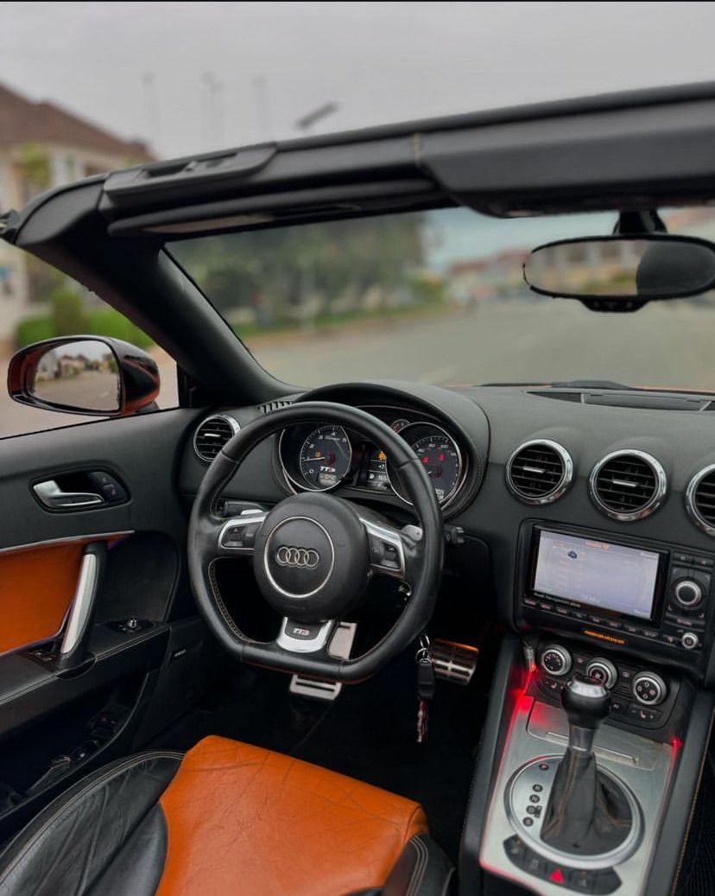
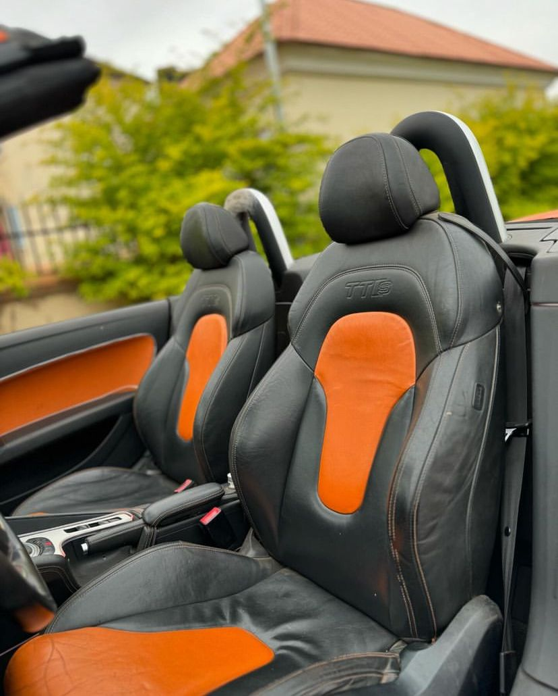
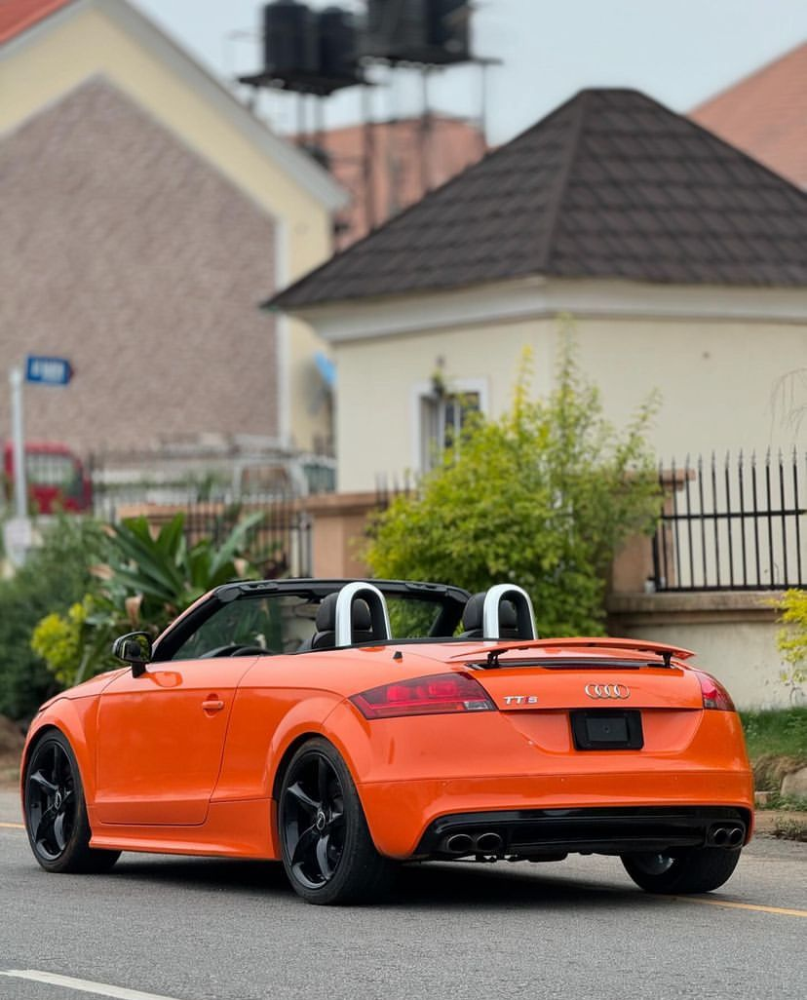

Now available Audi TTs cabriolet 2012 model with original custom duty

AUDI
TTs
PRICE: N24.5MILLION
The 2012 Audi TTS is a high-performance variant of Audi’s iconic TT sports coupe and roadster. This model offers a combination of sleek design, agile handling, and a potent turbocharged engine, making it an exciting choice for driving enthusiasts.

AUDI
TTs
PRICE: N24.5MILLION
The 2012 Audi TTS is powered by a 2.0-liter turbocharged 4-cylinder engine, producing:
265 horsepower and 258 lb-ft of torque
0-60 mph in about 4.9 seconds, making it quick off the line and responsive in any driving situation

AUDI
TTs
PRICE: N24.5MILLION
Magnetic ride suspension system, which adjusts the firmness of the suspension in real time for optimal comfort and performance
Lower center of gravity compared to the standard TT, improving cornering abilities and overall balance